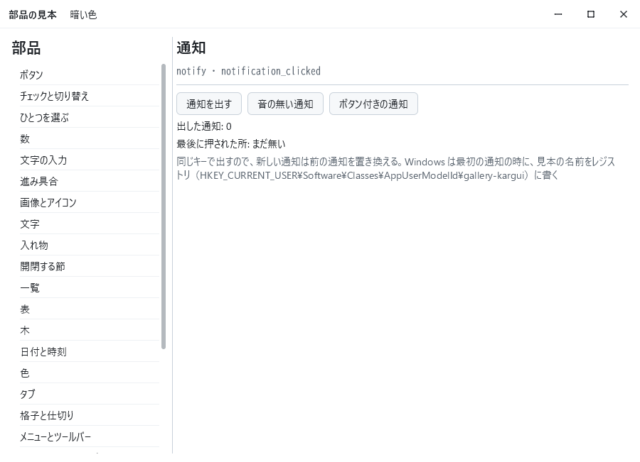
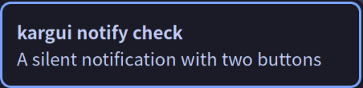

kargui 開発レポート ・ 第 17 章
通知
アプリの仕組みの 3 つ目として、通知を作りました。Windows はトースト（画面の右下に出て、通知センターにも残る物）、Linux はデスクトップの通知の係（org.freedesktop.Notifications）に出します。通知には題・本文・ボタンを置け、利用者が押した所をアプリが受け取れます。この章では、トーストを選んだ理由、書き方、インストールしないアプリがトーストに名前を出すための登録、OS ごとの違いを紹介します。後半では、自分では押せなかったトーストのボタンを、作者の手の確かめで確かめた話を書きます。
この章で分かること
- トーストと、トレイのアイコンの吹き出しの違い
- キーで頼んで、キーで答えを受け取る書き方
- インストールしないアプリが、トーストにアプリの名前を出す方法
- 押された知らせが別のスレッドから来る時に、窓の処理へ渡す方法
- 自分で押せない所を、作者の手の確かめに回す時の切り分け方
範囲を決めた
トレイを送った後、作者に通知の範囲を尋ねました。Linux はどちらの案でも同じ作り方になり、分かれるのは Windows です。トーストは今の Windows の通知の仕組みですが、アプリの名前を Windows に登録する必要があります。インストールしないアプリでは、利用者ごとのレジストリに kargui が書くことになります。
| 案 | 通知に置ける物 | アプリの準備 | 作る量 |
|---|---|---|---|
| トースト（推奨） | 題・本文・画像・ボタン。通知センターに残る | アプリの名前を Windows に登録する（利用者ごとのレジストリに kargui が書く） | 多い（windows クレートの機能を足す） |
| トレイのアイコンの吹き出し | 題・本文・小さいアイコンだけ。ボタンは置けない | 要らない（トレイのアイコンを使う） | 少ない |
作者の答えは「トーストで作って」でした。windows クレートに足したのは機能の切り替え（UI_Notifications など）だけで、新しい crate は増えていません。Linux も、前から使っている D-Bus の道具（zbus）で足りました。

\ が ¥ で表示される。書き方
ファイルのダイアログと同じく、キーで頼んで、キーで答えを受け取る形にしました。ui.notify は、呼んだ時に 1 回出す命令です（第 16 章の窓を出す・隠すと同じ考え方）。
if ui.button("Remind me").clicked() {
ui.notify("time", Notification::new("Time is up").body("The meeting starts").button("snooze", "In 5 minutes"));
}
match ui.notification_clicked("time") {
Some(NotificationAction::Button(id)) if id == "snooze" => self.snoozed += 1,
Some(_) => ui.show_window(),
None => {}
}- 同じキーで出し直すと、前の通知を置き換える。
ui.notification_clickedは、本文（Body）かボタン（Button(id)）が押された時に、1 回だけ答えを返す。押さずに閉じた時は何も返さない。- ボタンは 3 つまで。Windows のトーストは 5 つまで置けるが、Linux の通知の係は 3 つほどしか並べないため。
Notification::silent()で、音を鳴らさずに出す。計画では後回しにしていたが、確かめのたびに作者の PC で通知の音が鳴らないよう、先に足した。
OS ごとの違い
| 項目 | Windows | Linux |
|---|---|---|
| 出す仕組み | WinRT の ToastNotification（XML で題・本文・ボタンを書く） | D-Bus の Notify（題・本文・actions） |
| アプリの名前 | 最初の通知の時に、利用者ごとのレジストリに書いて登録する | Notify に毎回渡す |
| 押した知らせ | Activated が WinRT の別のスレッドに届く | ActionInvoked の知らせを、別のスレッドで受ける |
| 置き換え | Tag にキーを入れる | 前の通知の番号（replaces_id）を渡す |
| 音を消す | audio を silent にする | suppress-sound を渡す |
| アプリが終わった後 | 通知センターに残るが、押しても何も起きない | 通知の係による |
Windows: 名前の登録と、押された知らせ
トーストは、どのアプリの通知かを AppUserModelID という名前で見分けます。ストアなどからインストールしたアプリは、この名前を持っています。kargui のアプリのように、実行ファイルをそのまま動かすアプリには、この名前がありません。そこで、最初の通知の時に、利用者ごとのレジストリ HKEY_CURRENT_USER\Software\Classes\AppUserModelId\実行ファイルの名前 に、表示する名前（Options::title）を書いてから出します。トーストの上には、この名前が出ます。
押された知らせ（Activated）は、WinRT の別のスレッドに届きます。kargui は答えを列に積み、通知を頼んだ窓に知らせを積みます（PostMessage）。第 16 章で、エクスプローラーが「送る」知らせでは輪が起きないことが分かったので、ここは初めから「積む」形にしました。積んだ知らせは GetMessage を戻すので、輪が起きてフレームが回ります。トーストを出す呼び出しも、窓の状態を借りていない時に行います（第 15 章の 3 回目と同じ理由）。
Linux: actions の名前
Linux の Notify では、actions を「名前、表示する文字」の並びで渡します。本文を押した時の名前は「default」と決まっています。アプリがボタンの id を「default」にすると区別できなくなるので、ボタンの名前には「button:」を付けて送ります。押された知らせ（ActionInvoked）は、どのアプリの通知の物も届くので、kargui が出した通知の番号だけを見ます。

本物の窓で確かめた
| 確かめたこと | 結果 |
|---|---|
| Windows: 名前の登録 | レジストリに「kargui notify check」が書かれた |
| Windows: 通知センター | トーストの履歴に 1 件入った |
| Windows: ボタンを押す | 確かめられなかった（下の説明） |
| Linux（Wayland）: ボタンを押す | mako の命令でボタンを押すと、答え Button("snooze") がすぐ届いた |
| Linux（X11）: 本文を押す | 答え Body がすぐ届いた |
Windows では、UI オートメーションでトーストのボタンを探して押そうとしましたが、ボタンが見つかりませんでした。トーストが画面に出ずに、通知センターへ直接入った可能性があります（「応答不可」の設定など）。通知センターを開いて押す方法もありますが、作者の画面を動かすので使いませんでした。押した時の動きは、作者の手の確かめで見てもらうことにしました。確かめで作った通知センターの履歴とレジストリのキーは、確かめの道具の終わりに消しています。
作者の手の確かめ
見本の 25 ページ目「通知」で、作者に 10 の手順を試してもらいました。1 回目で、どの手順も記録の上で期待どおりでした。
| 手順 | 記録 |
|---|---|
| 通知を出す | 名前「部品の見本（kargui）」を登録して出した |
| 本文を押す | 答え Body が届き、見本の窓が前に出た |
| ボタン「開く」 | 答え Button("open") が届いた |
| 続けて 2 つ出す | 0.5 秒の間に 2 回出し、同じキーで置き換えた |
| × で閉じる | 閉じた理由は「利用者が閉じた」。答えは届かない |
| 通知センターで「あとで」 | 画面から消えた（時間切れ）後に押しても、答え Button("later") が届いた |
今回は、Windows で押した答えが届くかを、自分では確かめられませんでした。確かめられた所（名前の登録・通知センターへの記録・Linux の答え）と、確かめられなかった所を、作者に渡す時に分けて書きました。作者の手順には、確かめられなかった所（本文・ボタン・通知センターでの押し）を必ず入れました。記録の名前（notify.click・notify.answer）も先に決めておいたので、作者の 1 回の確かめで、残っていた所を全部埋められました。
数
通知で足した試験は 6 個です（共通 3、Windows のトーストの XML 1、Linux の actions 1、見本 1）。公開の項目の説明は 622 から 630 に、動く例は 439 から 445 に増えました。説明の中の動く例（doc テスト）は 715 から 727 に増えました。新しいファイルは 3 つで、合わせて 478 行です（Windows の toast_win.rs 191 行、Linux の notify_dbus.rs 161 行、共通の ui/notify.rs 126 行）。記録 ded14a7 は、作者の「送って」で GitHub に入りました。
CI
記録 ded14a7 は、CI の Windows・Linux・macOS で 1 回目から通りました。送る前に、CI の Windows と同じ 4 段と clippy を手元で走らせ、検証機でも試験と clippy を走らせています。windows クレートに足したのは機能の切り替えだけなので、Cargo.lock は変わっていません。
次の段階
アプリの仕組みの次は、ハイコントラスト、その後に多言語です。通知では、画像、アプリのアイコン（トーストの名前の横に出る物）、アプリが終わった後に押した時にアプリを起動することを、まだ作っていません。